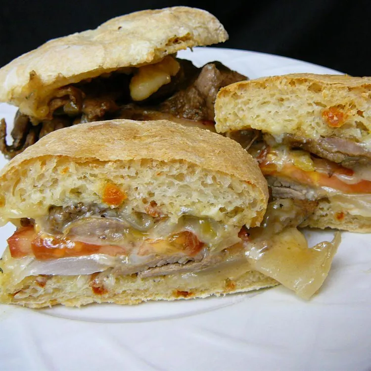

Ultimate Steak Sandwich

Description
Make the ultimate steak sandwich with tender and juicy steak and sauteed onions served on a toasted hard roll with garlic-Parmesan mayonnaise, provolone cheese and Italian seasoning. Don't forget to roll up your sleeves!
Ingredients
- 4 hard rolls, split
- ½ cup mayonnaise
- 3 cloves garlic, minced
- 1 tablespoon Parmesan cheese
- 3 tablespoons olive oil
- 2 pounds round steak, thinly sliced
- 1 large onion, sliced and quartered
- 1 pinch coarse sea salt
- ½ teaspoon Worcestershire sauce
- ⅛ teaspoon liquid smoke
- 8 (1 ounce) slices provolone cheese
- ½ teaspoon Italian seasoning
Steps
- Preheat an oven to 500 degrees F (260 degrees C). Split the rolls open and toast them on a baking sheet in the oven while it is preheating. Mix together the mayonnaise, garlic, and Parmesan cheese in a small bowl. Refrigerate until ready to use. Remove the rolls from the oven when toasted as desired.
- Heat olive oil in a large skillet over medium-high heat. Carefully place the sliced steak and onions in the pan and season with sea salt, Worcestershire sauce, and liquid smoke. Cook and stir until the steak is browned and the onion is tender, about 10 minutes.
- Generously spread the prepared garlic-Parmesan mayonnaise on both halves of the toasted rolls. Divide the steak and onion mixture evenly among the bottom halves of the rolls, piling them high. Top each with 2 slices provolone cheese and sprinkle with Italian seasoning. Place the tops on the sandwiches.
- Bake the sandwiches on a baking sheet in the preheated oven until the cheese is melted, about 5 minutes.
Back to Homepage